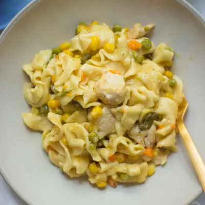

Instant Pot Chicken and Noodles

Ingredients
- 1 tablespoon butter
- 1 pound chicken breast or thigh, cut into bite-sized pieces
- 1 yellow onion, diced (optional)
- 1-2 teaspoons minced garlic or garlic powder
- 1 teaspoon Italian seasoning
- 12 ounce extra wide egg noodles
- 16 ounce frozen vegetable medley
- 4 cups low-sodium chicken broth
- 1/2 cup yogurt (can add more)
- 1 cup shredded cheddar cheese
Steps
- Set instant pot to saute function. Add butter, chicken, and onion (if using) and saute for about 2-3 minutes, until the outside of chicken gets seared. Add garlic and Italian seasoning. Give it a good stir and hit CANCEL.
- Add broth, scraping up any bits that stick to the bottom.
- Add pasta then veggies on top. There is no need to stir.
- Close lid and set valve to sealing pressure. Pressure cook on high for 5 minutes. Note: it will take about 15 minutes to come to pressure. Once it beeps, quick release by turning the vent to venting position.
- Stir in yogurt and cheese.
Recipe by Min Kwon · Kidfriendly Meals, from MJ and Hungryman. Saved here for personal use; the original has the full notes, tips and photos. Open original